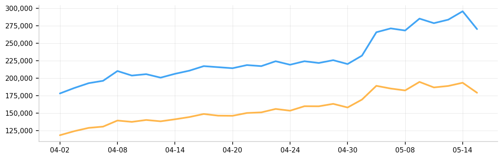
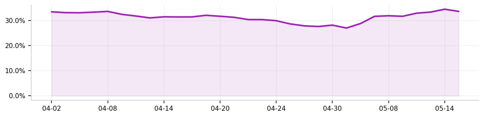

| 종목 | 현재가 | 전일 대비 | 30일 평균 | 30일 변동폭 | ||
|---|---|---|---|---|---|---|
| 최고 | 최저 | % | ||||
| 보통주 (005930.KS) | 270,500 | ▼ -25,500 (-8.61%) | 228,940 | 296,000 | 178,400 | 65.92% |
| 우선주 (005935.KS) | 179,400 | ▼ -14,300 (-7.38%) | 157,060 | 194,900 | 118,600 | 64.33% |
| 현재 | 30일 평균 | 30일 최저 | 30일 최고 |
|---|---|---|---|
| 33.68% | 31.38% | 27.05% | 34.56% |


| 발행 | 제목 | 출처 |
|---|---|---|
| Sun, 17 May 2026 10:45:00 GMT | 이재용 사과 뒤…삼성전자 노사, 18일 교섭 재개 합의 | 한겨레 |
| Sun, 17 May 2026 08:46:38 GMT | 위원장 월 1000만원 직책수당? 삼성노조, 분노의 탈퇴 러시 | 중앙일보 |
| Sun, 17 May 2026 07:21:00 GMT | 조정? 매수 기회?…'파업 변수' 삼성전자 주가 향방은? | v.daum.net |
| Sun, 17 May 2026 06:43:00 GMT | 김 총리 “삼성전자 파업, 긴급조정 포함 모든 대응 강구” | 한겨레 |
| Sun, 17 May 2026 06:40:49 GMT | 삼성전자 노조 위원장 '月 1000만원 수당'?…'노노갈등' 격화 - 머니투데이 | 머니투데이 |
| Sun, 17 May 2026 06:10:18 GMT | 정부, 삼성전자에 긴급조정권 첫 시사…"마지막 기회" 최대 압박(종합) | 연합뉴스 |
| Sun, 17 May 2026 05:57:00 GMT | 파업 치닫던 삼성전자, 18일 ‘마지막’ 노사 협상 재개···전국민 주시 속 극적 돌파구 찾나 | 경향신문 |
| Sun, 17 May 2026 04:55:35 GMT | 金총리 "삼성전자 파업한다면 긴급 조정 등 모든 수단 강구할 것" | 조선일보 |
| Sun, 17 May 2026 03:48:04 GMT | 삼성전자 5대 고객사 중 아마존 처음으로 진입 | 연합인포맥스 |
| Sat, 16 May 2026 22:23:28 GMT | "삼성전자 파업, 긴급조정 거론 말라"…양대노총 '반발' | 한국경제 |
데이터: yfinance · Google News RSS · 자동 발송